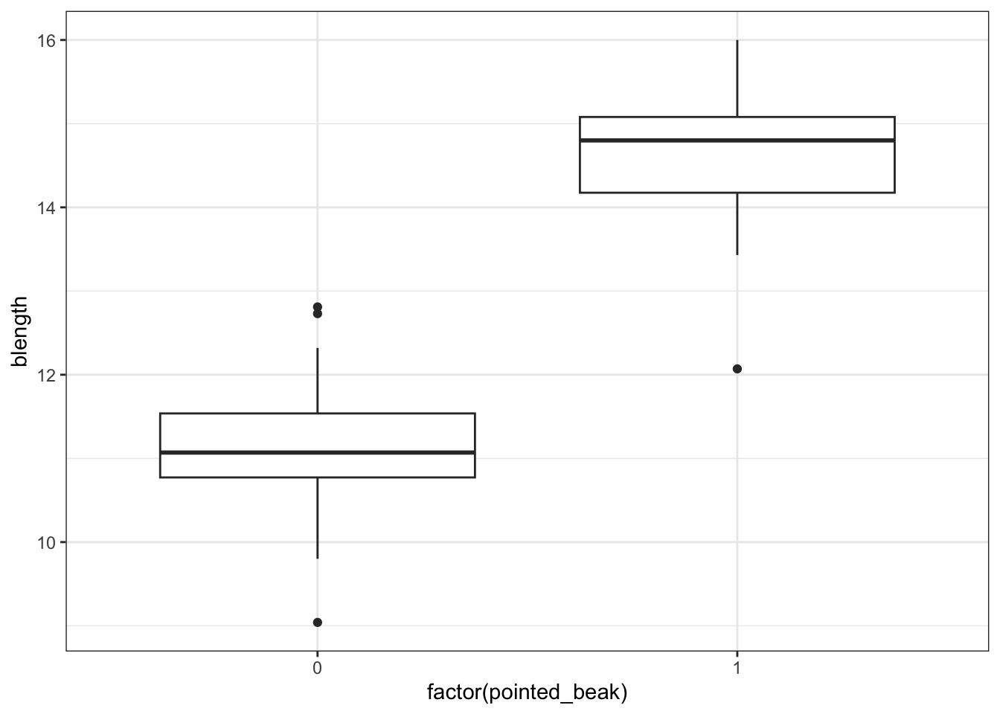

# A maths library
import math
# A Python data analysis and manipulation tool
import pandas as pd
# Python equivalent of `ggplot2`
from plotnine import *
# Statistical models, conducting tests and statistical data exploration
import statsmodels.api as sm
# Convenience interface for specifying models using formula strings and DataFrames
import statsmodels.formula.api as smf7 Binary response
Learning outcomes
Questions
- How do we analyse data with a binary outcome?
- Can we test if our model is any good?
- Be able to perform a logistic regression with a binary outcome
- Predict outcomes of new data, based on a defined model
Objectives
- Be able to analyse binary outcome data
- Understand different methods of testing model fit
- Be able to make model predictions
7.1 Libraries and functions
Click to expand
7.1.1 Libraries
7.1.2 Functions
7.1.3 Libraries
7.1.4 Functions
The example in this section uses the following data set:
data/finches_early.csv
These data come from an analysis of gene flow across two finch species (Lamichhaney et al. 2020). They are slightly adapted here for illustrative purposes.
The data focus on two species, Geospiza fortis and G. scandens. The original measurements are split by a uniquely timed event: a particularly strong El Niño event in 1983. This event changed the vegetation and food supply of the finches, allowing F1 hybrids of the two species to survive, whereas before 1983 they could not. The measurements are classed as early (pre-1983) and late (1983 onwards).
Here we are looking only at the early data. We are specifically focussing on the beak shape classification, which we saw earlier in Figure 6.5.
7.2 Load and visualise the data
First we load the data, then we visualise it.
early_finches <- read_csv("data/finches_early.csv")early_finches_py = pd.read_csv("data/finches_early.csv")Looking at the data, we can see that the pointed_beak column contains zeros and ones. These are actually yes/no classification outcomes and not numeric representations.
We’ll have to deal with this soon. For now, we can plot the data:
ggplot(early_finches,
aes(x = factor(pointed_beak),
y = blength)) +
geom_boxplot()
We could just give Python the pointed_beak data directly, but then it would view the values as numeric. Which doesn’t really work, because we have two groups as such: those with a pointed beak (1), and those with a blunt one (0).
We can force Python to temporarily covert the data to a factor, by making the pointed_beak column an object type. We can do this directly inside the ggplot() function.
(ggplot(early_finches_py,
aes(x = early_finches_py.pointed_beak.astype(object),
y = "blength")) +
geom_boxplot())
It looks as though the finches with blunt beaks generally have shorter beak lengths.
We can visualise that differently by plotting all the data points as a classic binary response plot:
ggplot(early_finches,
aes(x = blength, y = pointed_beak)) +
geom_point()
(ggplot(early_finches_py,
aes(x = "blength",
y = "pointed_beak")) +
geom_point())
This presents us with a bit of an issue. We could fit a linear regression model to these data, although we already know that this is a bad idea…
ggplot(early_finches,
aes(x = blength, y = pointed_beak)) +
geom_point() +
geom_smooth(method = "lm", se = FALSE)
(ggplot(early_finches_py,
aes(x = "blength",
y = "pointed_beak")) +
geom_point() +
geom_smooth(method = "lm",
colour = "blue",
se = False))
Of course this is rubbish - we can’t have a beak classification outside the range of \([0, 1]\). It’s either blunt (0) or pointed (1).
But for the sake of exploration, let’s look at the assumptions:

First, we create a linear model:
# create a linear model
model = smf.ols(formula = "pointed_beak ~ blength",
data = early_finches_py)
# and get the fitted parameters of the model
lm_bks_py = model.fit()Next, we can create the diagnostic plots:
dgplots(lm_bks_py)

They’re pretty extremely bad.
- The response is not linear (Residual Plot, binary response plot, common sense).
- The residuals do not appear to be distributed normally (Q-Q Plot)
- The variance is not homogeneous across the predicted values (Location-Scale Plot)
- But - there is always a silver lining - we don’t have influential data points.
7.3 Creating a suitable model
So far we’ve established that using a simple linear model to describe a potential relationship between beak length and the probability of having a pointed beak is not a good idea. So, what can we do?
One of the ways we can deal with binary outcome data is by performing a logistic regression. Instead of fitting a straight line to our data, and performing a regression on that, we fit a line that has an S shape. This avoids the model making predictions outside the \([0, 1]\) range.
We described our standard linear relationship as follows:
\(Y = \beta_0 + \beta_1X\)
We can now map this to our non-linear relationship via the logistic link function:
\(Y = \frac{\exp(\beta_0 + \beta_1X)}{1 + \exp(\beta_0 + \beta_1X)}\)
Note that the \(\beta_0 + \beta_1X\) part is identical to the formula of a straight line.
The rest of the function is what makes the straight line curve into its characteristic S shape.
Euler’s number (\(\exp\)): would you like to know more?
In mathematics, \(\rm e\) represents a constant of around 2.718. Another notation is \(\exp\), which is often used when notations become a bit cumbersome. Here, I exclusively use the \(\exp\) notation for consistency.
The logistic function
The shape of the logistic function is hugely influenced by the different parameters, in particular \(\beta_1\). The plots below show different situations, where \(\beta_0 = 0\) in all cases, but \(\beta_1\) varies.
The first plot shows the logistic function in its simplest form, with the others showing the effect of varying \(\beta_1\).

- when \(\beta_1 = 1\), this gives the simplest logistic function
- when \(\beta_1 = 0\) gives a horizontal line, with \(Y = \frac{\exp(\beta_0)}{1+\exp(\beta_0)}\)
- when \(\beta_1\) is negative flips the curve around, so it slopes down
- when \(\beta_1\) is very large then the curve becomes extremely steep
We can fit such an S-shaped curve to our early_finches data set, by creating a generalised linear model.
In R we have a few options to do this, and by far the most familiar function would be glm(). Here we save the model in an object called glm_bks:
glm_bks <- glm(pointed_beak ~ blength,
family = binomial,
data = early_finches)The format of this function is similar to that used by the lm() function for linear models. The important difference is that we must specify the family of error distribution to use. For logistic regression we must set the family to binomial.
If you forget to set the family argument, then the glm() function will perform a standard linear model fit, identical to what the lm() function would do.
In Python we have a few options to do this, and by far the most familiar function would be glm(). Here we save the model in an object called glm_bks_py:
# create a linear model
model = smf.glm(formula = "pointed_beak ~ blength",
family = sm.families.Binomial(),
data = early_finches_py)
# and get the fitted parameters of the model
glm_bks_py = model.fit()The format of this function is similar to that used by the ols() function for linear models. The important difference is that we must specify the family of error distribution to use. For logistic regression we must set the family to binomial. This is buried deep inside the statsmodels package and needs to be defined as sm.families.Binomial().
7.4 Model output
That’s the easy part done! The trickier part is interpreting the output. First of all, we’ll get some summary information.
summary(glm_bks)
Call:
glm(formula = pointed_beak ~ blength, family = binomial, data = early_finches)
Coefficients:
Estimate Std. Error z value Pr(>|z|)
(Intercept) -43.410 15.250 -2.847 0.00442 **
blength 3.387 1.193 2.839 0.00452 **
---
Signif. codes: 0 '***' 0.001 '**' 0.01 '*' 0.05 '.' 0.1 ' ' 1
(Dispersion parameter for binomial family taken to be 1)
Null deviance: 84.5476 on 60 degrees of freedom
Residual deviance: 9.1879 on 59 degrees of freedom
AIC: 13.188
Number of Fisher Scoring iterations: 8print(glm_bks_py.summary()) Generalized Linear Model Regression Results
==============================================================================
Dep. Variable: pointed_beak No. Observations: 61
Model: GLM Df Residuals: 59
Model Family: Binomial Df Model: 1
Link Function: Logit Scale: 1.0000
Method: IRLS Log-Likelihood: -4.5939
Date: Mon, 22 Jan 2024 Deviance: 9.1879
Time: 11:16:02 Pearson chi2: 15.1
No. Iterations: 8 Pseudo R-squ. (CS): 0.7093
Covariance Type: nonrobust
==============================================================================
coef std err z P>|z| [0.025 0.975]
------------------------------------------------------------------------------
Intercept -43.4096 15.250 -2.847 0.004 -73.298 -13.521
blength 3.3866 1.193 2.839 0.005 1.049 5.724
==============================================================================There’s a lot to unpack here, but let’s start with what we’re familiar with: coefficients!
7.5 Parameter interpretation
The coefficients or parameters can be found in the Coefficients block. The main numbers to extract from the output are the two numbers underneath Estimate.Std:
Coefficients:
Estimate Std.
(Intercept) -43.410
blength 3.387 Right at the bottom is a table showing the model coefficients. The main numbers to extract from the output are the two numbers in the coef column:
======================
coef
----------------------
Intercept -43.4096
blength 3.3866
======================These are the coefficients of the logistic model equation and need to be placed in the correct equation if we want to be able to calculate the probability of having a pointed beak for a given beak length.
The \(p\) values at the end of each coefficient row merely show whether that particular coefficient is significantly different from zero. This is similar to the \(p\) values obtained in the summary output of a linear model. As with continuous predictors in simple models, these \(p\) values can be used to decide whether that predictor is important (so in this case beak length appears to be significant). However, these \(p\) values aren’t great to work with when we have multiple predictor variables, or when we have categorical predictors with multiple levels (since the output will give us a \(p\) value for each level rather than for the predictor as a whole).
We can use the coefficients to calculate the probability of having a pointed beak for a given beak length:
\[ P(pointed \ beak) = \frac{\exp(-43.41 + 3.39 \times blength)}{1 + \exp(-43.41 + 3.39 \times blength)} \]
Having this formula means that we can calculate the probability of having a pointed beak for any beak length. How do we work this out in practice?
Well, the probability of having a pointed beak if the beak length is large (for example 15 mm) can be calculated as follows:
If the beak length is small (for example 10 mm), the probability of having a pointed beak is extremely low:
Well, the probability of having a pointed beak if the beak length is large (for example 15 mm) can be calculated as follows:
# import the math library
import mathmath.exp(-43.41 + 3.39 * 15) / (1 + math.exp(-43.41 + 3.39 * 15))0.9994130595039192If the beak length is small (for example 10 mm), the probability of having a pointed beak is extremely low:
math.exp(-43.41 + 3.39 * 10) / (1 + math.exp(-43.41 + 3.39 * 10))7.410155028945912e-05We can calculate the the probabilities for all our observed values and if we do that then we can see that the larger the beak length is, the higher the probability that a beak shape would be pointed. I’m visualising this together with the logistic curve, where the blue points are the calculated probabilities:
Code available here
glm_bks %>%
augment(type.predict = "response") %>%
ggplot() +
geom_point(aes(x = blength, y = pointed_beak)) +
geom_line(aes(x = blength, y = .fitted),
linetype = "dashed",
colour = "blue") +
geom_point(aes(x = blength, y = .fitted),
colour = "blue", alpha = 0.5) +
labs(x = "beak length (mm)",
y = "Probability")(ggplot(early_finches_py) +
geom_point(aes(x = "blength", y = "pointed_beak")) +
geom_line(aes(x = "blength", y = glm_bks_py.fittedvalues),
linetype = "dashed",
colour = "blue") +
geom_point(aes(x = "blength", y = glm_bks_py.fittedvalues),
colour = "blue", alpha = 0.5) +
labs(x = "beak length (mm)",
y = "Probability"))
The graph shows us that, based on the data that we have and the model we used to make predictions about our response variable, the probability of seeing a pointed beak increases with beak length.
Short beaks are more closely associated with the bluntly shaped beaks, whereas long beaks are more closely associated with the pointed shape. It’s also clear that there is a range of beak lengths (around 13 mm) where the probability of getting one shape or another is much more even.
7.6 Assumptions
As explained in the background chapter, we can’t really use the standard diagnostic plots to assess assumptions. We’re not going to go into a lot of detail for now, but there is one thing that we can do: look for influential points using the Cook’s distance plot:
plot(glm_bks , which=4)
This shows that there are no very obvious influential points. You could regard point 34 as potentially influential (it’s got a Cook’s distance of around 0.8), but I’m not overly worried.
7.7 Assessing significance
We can ask several questions.
Is the model well-specified?
Roughly speaking this asks “can our model predict our data reasonably well?”
Unfortunately, there isn’t a single command that does this for us, and we have to lift some of the numbers from the summary output ourselves.
1 - pchisq(9.1879, 59)[1] 1Here, we’ve used the pchisq function (which calculates the correct probability for us – ask if you want a hand-wavy explanation). The first argument to it is the residual deviance value from the summary table, the second argument to is the residual degrees of freedom argument from the same table.
This gives us a probability of 1. We can interpret this as the probability that the model is actually good. There aren’t any strict conventions on how to interpret this value but, for me, a tiny value would indicate a rubbish model.
Is the overall model better than the null model?
1 - pchisq(84.5476 - 9.1879, 60 - 59)[1] 0Here we’ve used the pchisq function again (if you didn’t ask before, you probably aren’t going to ask now). The first argument is the difference between the null and residual deviances and the second argument is the difference in degrees of freedom between the null and residual models. All of these values can be lifted from the summary table.
This gives us a probability of 0, which is technically not possible. This value is doing a formal test to see whether our fitted model is significantly different from the null model. Here we can treat this a classical hypothesis test and since this p-value is less than 0.05 then we can say that our fitted model (with blength as a predictor variable) is definitely better than the null model (which has no predictor variables). Woohoo!
Are any of the individual predictors significant?
Finally, we’ll use the anova function from before to determine which predictor variables are important, and specifically in this case whether the glucose predictor is significant.
anova(glm_bks , test = "Chisq")Analysis of Deviance Table
Model: binomial, link: logit
Response: pointed_beak
Terms added sequentially (first to last)
Df Deviance Resid. Df Resid. Dev Pr(>Chi)
NULL 60 84.548
blength 1 75.36 59 9.188 < 2.2e-16 ***
---
Signif. codes: 0 '***' 0.001 '**' 0.01 '*' 0.05 '.' 0.1 ' ' 1The anova() function is a true workhorse within R! This time we’ve used it to create an Analysis of Deviance table. This is exactly equivalent to an ordinary ANOVA table where we have rows corresponding to each predictor variable and a p-value telling us whether that variable is significant or not.
The p-value for the blength predictor is written under then Pr(>Chi) column and we can see that it is less than < 2.2e-16. So, beak length is a significant predictor.
This shouldn’t be surprising since we already saw that our overall model was better than the null model, which in this case is exactly the same as asking whether the beak length term is significant. However, in more complicated models with multiple predictors these two comparisons (and p-values) won’t be the same.
7.8 Exercises
7.8.1 Diabetes
Exercise
Level:
For this exercise we’ll be using the data from data/diabetes.csv.
This is a data set comprising 768 observations of three variables (one dependent and two predictor variables). This records the results of a diabetes test result as a binary variable (1 is a positive result, 0 is a negative result), along with the result of a glucose tolerance test and the diastolic blood pressure for each of 768 women. The variables are called test_result, glucose and diastolic.
We want to see if the glucose tolerance is a meaningful predictor for predictions on a diabetes test. To investigate this, do the following:
- Load and visualise the data
- Create a suitable model
- Determine if there are any statistically significant predictors
- Calculate the probability of a positive diabetes test result for a glucose tolerance test value of
glucose = 150
Answer
Load and visualise the data
First we load the data, then we visualise it.
diabetes <- read_csv("data/diabetes.csv")diabetes_py = pd.read_csv("data/diabetes.csv")Looking at the data, we can see that the test_result column contains zeros and ones. These are yes/no test result outcomes and not actually numeric representations.
We’ll have to deal with this soon. For now, we can plot the data, by outcome:
ggplot(diabetes,
aes(x = factor(test_result),
y = glucose)) +
geom_boxplot()
We could just give Python the test_result data directly, but then it would view the values as numeric. Which doesn’t really work, because we have two groups as such: those with a negative diabetes test result, and those with a positive one.
We can force Python to temporarily covert the data to a factor, by making the test_result column an object type. We can do this directly inside the ggplot() function.
(ggplot(diabetes_py,
aes(x = diabetes_py.test_result.astype(object),
y = "glucose")) +
geom_boxplot())
It looks as though the patients with a positive diabetes test have slightly higher glucose levels than those with a negative diabetes test.
We can visualise that differently by plotting all the data points as a classic binary response plot:
ggplot(diabetes,
aes(x = glucose,
y = test_result)) +
geom_point()
(ggplot(diabetes_py,
aes(x = "glucose",
y = "test_result")) +
geom_point())
Create a suitable model
We’ll use the glm() function to create a generalised linear model. Here we save the model in an object called glm_dia:
glm_dia <- glm(test_result ~ glucose,
family = binomial,
data = diabetes)The format of this function is similar to that used by the lm() function for linear models. The important difference is that we must specify the family of error distribution to use. For logistic regression we must set the family to binomial.
# create a linear model
model = smf.glm(formula = "test_result ~ glucose",
family = sm.families.Binomial(),
data = diabetes_py)
# and get the fitted parameters of the model
glm_dia_py = model.fit()Let’s look at the model parameters:
summary(glm_dia)
Call:
glm(formula = test_result ~ glucose, family = binomial, data = diabetes)
Coefficients:
Estimate Std. Error z value Pr(>|z|)
(Intercept) -5.611732 0.442289 -12.69 <2e-16 ***
glucose 0.039510 0.003398 11.63 <2e-16 ***
---
Signif. codes: 0 '***' 0.001 '**' 0.01 '*' 0.05 '.' 0.1 ' ' 1
(Dispersion parameter for binomial family taken to be 1)
Null deviance: 936.6 on 727 degrees of freedom
Residual deviance: 752.2 on 726 degrees of freedom
AIC: 756.2
Number of Fisher Scoring iterations: 4print(glm_dia_py.summary()) Generalized Linear Model Regression Results
==============================================================================
Dep. Variable: test_result No. Observations: 728
Model: GLM Df Residuals: 726
Model Family: Binomial Df Model: 1
Link Function: Logit Scale: 1.0000
Method: IRLS Log-Likelihood: -376.10
Date: Mon, 22 Jan 2024 Deviance: 752.20
Time: 11:16:06 Pearson chi2: 713.
No. Iterations: 4 Pseudo R-squ. (CS): 0.2238
Covariance Type: nonrobust
==============================================================================
coef std err z P>|z| [0.025 0.975]
------------------------------------------------------------------------------
Intercept -5.6117 0.442 -12.688 0.000 -6.479 -4.745
glucose 0.0395 0.003 11.628 0.000 0.033 0.046
==============================================================================We can see that glucose is a significant predictor for the test_result (the \(p\) value is much smaller than 0.05).
Knowing this, we’re interested in the coefficients. We have an intercept of -5.61 and 0.0395 for glucose. We can use these coefficients to write a formula that describes the potential relationship between the probability of having a positive test result, dependent on the glucose tolerance level value:
\[ P(positive \ test\ result) = \frac{\exp(-5.61 + 0.04 \times glucose)}{1 + \exp(-5.61 + 0.04 \times glucose)} \]
Calculating probabilities
Using the formula above, we can now calculate the probability of having a positive test result, for a given glucose value. If we do this for glucose = 150, we get the following:
This tells us that the probability of having a positive diabetes test result, given a glucose tolerance level of 150 is around 67%.
7.9 Summary
Key points
- We use a logistic regression to model a binary response
- We can feed new observations into the model and get probabilities for the outcome